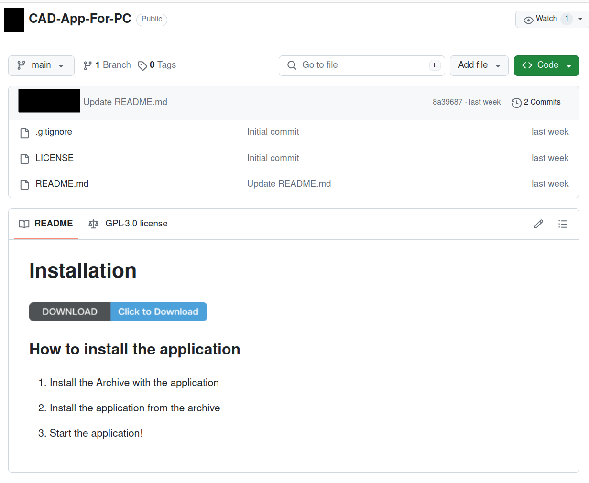
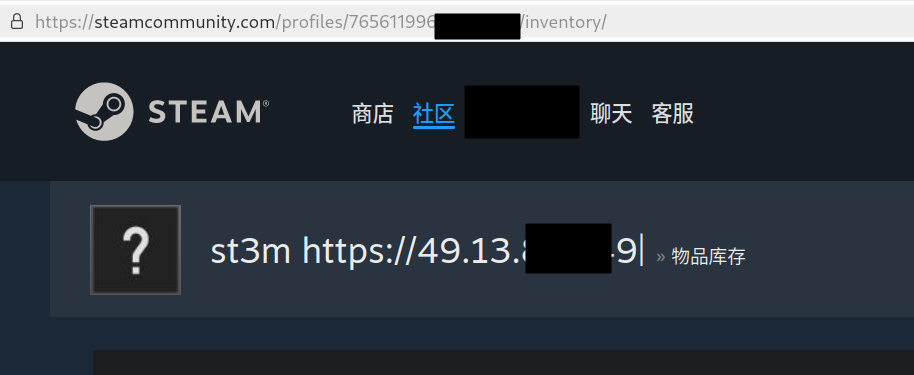

安全¶
本文初稿已完成，但可能仍需大幅度修改
「安全」是什么？¶
「信息安全」重点关注三个方面：机密性（Confidentiality）、完整性（Integrity）和可用性（Availability），也被称为 CIA 三要素：
- 机密性：确保信息只能被授权的人访问，例如加密数据、对需要访问信息的人员进行身份验证等。
- 完整性：确保信息不被篡改、损坏、丢失，例如数字签名等。
- 可用性：确保信息在需要时可用，例如备份、冗余等。
尽管从这个模型来讲，类似于「因为没有恰当设置 RAID 和备份，导致数据丢失」这样的事件也是安全问题（符合完整性和可用性的定义），但是本部分讨论的「安全」更多关注蓄意的恶意行为和攻击，而不是误操作、自然灾害、硬件故障等。虽然可以说两者都是「安全」——前者是 "security"，而后者是 "safety"。
我们希望自己维护的系统是安全的，但是很遗憾的是，这个世界上不可能有绝对安全的系统。我们需要对自己所需的安全模型（威胁模型）有基本的了解，以便判断自己需要做什么，不需要做什么，达到便利与安全的平衡（一些安全加固措施或多或少会影响正常的使用）。
事前：预防¶
预防安全事件依赖于对威胁的了解（威胁模型分析），一种常见的思路是从攻击者的视角考虑问题：如果我是一个攻击者，我会怎么做？
网络攻击的基本思路¶
法律警告
进行渗透测试必须得到所有者明确的授权，否则可能触犯法律。
网络攻击的基本思路在渗透测试的流程中有所体现：
- 信息收集：攻击者需要尽可能了解目标系统的各类信息，例如目标服务的 IP 地址、开放的端口、运行的服务等等。这些信息也被称为「信息资产」。
- 边界突破：在获取信息之后，攻击者会尝试突破目标系统的边界，例如通过暴力破解密码、利用漏洞等方式，并且提升自身的权限，为下一步内网渗透做准备。
- 内网渗透：在突破边界之后，攻击者会尝试在内网中移动，攻击内网更多的机器，获取更多的信息，提升权限，最终达成自己的目的。在这个过程中，攻击者可能会尝试将自己使用的攻击方式持久化，以便在利用的漏洞被修复之后仍然能够访问目标系统。攻击者也可能会清理自己的痕迹，避免被系统管理员发现。
攻击面¶
攻击面是系统中可达的、可能被利用的脆弱点。攻击方和防守方都需要对攻击面有所了解，以便有效攻击/防御。
- 软件攻击面：例如暴露在公网的 Web 应用常常是攻击者首选的目标，因为这些应用直接暴露在公网，并且需要处理各种用户输入，更容易受到攻击；此外，其他的服务器软件（例如数据库）可能存在漏洞或者配置不当，也是攻击者的目标。
- 网络攻击面：指在数据传输过程中存在的各种可能被攻击利用的脆弱点，主要涉及网络协议和数据传输。例如，老旧的协议（HTTP、早期的 SSL/TLS 版本等）容易受到中间人攻击；诸如 DNS 劫持、ARP 欺骗等攻击也是常见的网络攻击方式。
- 人为攻击面：很多时候，从人入手比从机器入手攻击更简单。社会工程学攻击（例如钓鱼邮件、电话诈骗等）是攻击者获取信息的常见方式。此外，一些用户也可能会因为自己的疏忽或者不当操作导致自己成为更庞大的系统被攻击的跳板。
常见漏洞与攻击方法¶
弱口令¶
由于这个问题实在是太过常见，所以我们在这里单独列出。一般来讲，攻击者有一些常见密码的字典，可以在线或者离线地尝试这些密码。最常见的密码包括 "123456"、"password" 等。攻击者也可能从泄漏的密码库中获取指定用户的密码，然后尝试登录，如果用户有多个网站使用相同或相似密码的习惯，那么攻击者就能够轻松登录。攻击者也可以通过指定用户的个人信息（例如姓名、生日、工作单位等）尝试按规律构造密码并尝试。攻击者的密码本中可能存在相对复杂的密码，例如 1qaz@WSX（有趣的是，这个密码完美符合有大小写、特殊符号和基础的长度要求，但是是一个很差的密码，可以想一下为什么）等。
此外，一些物理设备或内部网络服务存在固定的默认密码，或者是例如生日、身份证后六位之类有规律的默认密码，并且不要求用户修改。这些密码也很容易被攻击者获取并利用。
内网 ≠ 安全
一个常见的误区是，因为系统只有内网能够访问，所以随便设置一个简单的密码就可以了。但是，内网并非固若金汤，当攻击者通过外部服务或者其他方式进入内网之后，这些简单的密码就会成为攻击者的目标。
软件漏洞¶
网络应用¶
网络应用的漏洞是攻击常见的切入点之一。最常见的一类问题是：由于信任用户输入，导致恶意构造的数据以非预期的方式被执行。
例如 SQL 注入。对于下面的 SQL 查询：
如果应用程序选择直接通过拼接字符串的方式构造这个查询，并且用户输入的 username 是 admin，password 是 123' OR '1'='1，那么查询就会变成：
可以发现，这个查询就不再起到检查密码的作用，恶意用户此时就可以以 admin 的身份登录系统。
相似的问题还有 XSS（跨站脚本攻击）：如果应用程序直接将用户输入的内容插入到 HTML 中，那么攻击者可以构造恶意的 HTML 代码，例如：
如果应用程序不对用户输入进行过滤，那么攻击者可以构造内容为 <script>alert('XSS')</script> 的评论，构造出这样的 HTML 代码：
这样所有访问这个页面的用户都会弹出对话框。由于 JavaScript 代码可以访问用户的 Cookie 与 LocalStorage，攻击者可以通过这种方式窃取用户的凭证信息，以用户的身份进行操作（即使不知道用户的密码！）。
此外，还有一些其他的漏洞，例如 CSRF（跨站请求伪造）：攻击者可以构造页面，用户在访问这个页面的时候，会向目标网站发送恶意请求（例如转账、修改密码等）。如果目标网站没有对这样的请求有所防御（例如使用 CSRF Token、验证 Referer 等），那么攻击者就可以利用这个漏洞以用户的身份执行操作。
二进制漏洞¶
二进制漏洞是另一种较为常见的攻击方式，通常是内存安全问题（例如缓冲区溢出等）。攻击者可以通过构造特定的输入，使得程序执行出现非预期的行为，运行恶意代码。例如以下的 C 代码：
由于 gets() 函数不会检查输入长度，因为攻击者可以输入超过 8 个字符的内容，可以覆盖 main() 函数的返回地址。如果栈有可执行权限（现代程序一般不会有），攻击者可以构造恶意的 shellcode，使得程序执行任意代码；即使没有可执行权限，通过 ROP（Return-Oriented Programming）攻击方法，攻击者也可以执行任意代码。
有时候一些内存安全问题没有那么明显，例如下面这个例子：
这个程序看起来没有问题，但是如果用户输入的内容中包含类似 %s 的格式化字符串，那么 printf() 函数就会按照用户输入的内容进行格式化输出。攻击者可以构造恶意的格式化字符串来读取甚至写入指定内存的内容，达到自己的目的。
什么，这样还能写入数据？
%n 格式化字符串可以将当前已经输出的字符数写入对应的整型指针参数所指的变量。
0-day/1-day/n-day 漏洞¶
包含复杂功能的计算机程序几乎不可能做到没有漏洞，攻击者与安全研究人员都会不断寻找诸如常用软件、操作系统、网络设备等的漏洞。其中 0-day 漏洞指代软件开发者（通常）不知情，并且也没有补丁的漏洞，1-day 漏洞则指代漏洞已经公布、已经有补丁或者缓解措施，但是由于时间较短，仍然有很多系统没有安装补丁的漏洞，n-day 漏洞则是指代漏洞已经公布很久，但是仍然有一部分系统没有安装补丁的漏洞。
0-day 漏洞通常价值不菲，并且没有很好的通用防御方法。尽管大部分读者都不值得被 0-day 漏洞攻击，但这不代表你不会被攻击——例如 2023 年前，���就在自己的安卓安装包中加入了一些 0-day 漏洞，以此窃取用户手机的隐私数据。
而 1-day 漏洞则需要运维及时响应，因为此时 PoC（Proof of Concept，漏洞利用的示例代码）一般已经公开，攻击者可以很快地利用这个漏洞；即使暂时没有公开，也会有很多人尝试编写 PoC。n-day 漏洞一般已经有非常成熟的攻击工具，如果维护人员管理不当，就很容易中招（例如 2017 年公布的永恒之蓝漏洞 MS17-010，即使已经时隔超过 7 年，由于一些单位的内网管理不当，时至今日依然是攻击者在内网渗透中很有用的工具）。
社会工程学¶
人类自己通常是计算机安全中最薄弱的一环。攻击者可以通过欺骗、威胁、利诱等手段获取用户的敏感信息。一些常见的例子包括：
- 钓鱼邮件：例如伪装成发票、上级通知、退税邮件等，欺骗用户点击恶意链接、执行恶意附件。
- 利诱：例如有偿购买用户的校园卡/工卡/VPN 认证账号等。
钓鱼邮件示例
尽管我们一般收到的很多钓鱼邮件都能够一眼识破，但是也存在精心制作的钓鱼邮件。特别是针对高价值目标，如果精心制作的钓鱼邮件能够为攻击者打开侵入的大门，那么尽可能伪装钓鱼邮件的成本是值得的。这也是 APT（Advanced Persistent Threat，高级持续性威胁）攻击常见的起始步骤。
以下分享一则我们真实收到精心制作的钓鱼邮件，隐去了部分细节：
FROM: xxxxx <xxxxx@163.com>
TO: xxxxx@ustc.edu.cn
SUBJECT: 关于中国科学技术大学统一电子签章平台上线试运行的通知
各单位：
为落实“智慧科大”数字化发展战略，推进无纸化办公目标，缓解师生线下办事难题，学校规划建设的科大统一电子签名平台已试运行。
平台提供安全可靠的电子签名服务能力，包括统一电子签名平台，欢迎全校各单位及师生使用统一电子签名平台。
电子签名平台使用说明见附件
密码：12345
中国科学技术大学
63602393
如果不看 FROM，邮件看起来还比较真实，因为邮件中的内容都是公开信息。附件 21333.rar 为加密压缩包（逃避邮件系统对附件内容的病毒检查），压缩包内包含了 Windows 快捷方式文件 21333.pdf.lnk，图标为 Microsoft Edge 的。而这个快捷方式的目标是 powershell.exe，命令行参数包含了从外部网站下载 PDF 与攻击负载，打开 PDF 与运行攻击负载的内容。如果不慎点击就会中招，并且由于真的会打开 PDF，中招之后可能第一时间无法发现。
拒绝服务攻击¶
有的时候，攻击者的目标不是为了获取信息，而是为了破坏系统的可用性。这么做的目的可能是为了敲诈勒索、报复，也有可能只是为了满足自己的（扭曲）心理。拒绝服务攻击也被称为 DoS（Denial of Service）攻击。一部分 DoS 攻击针对目标服务（软件）的漏洞，例如发送特定的数据包导致服务崩溃，如果不停发送，那么服务就无法正常运行。另一部分诸如 SYN Flood、UDP Flood 等攻击则是利用网络协议的特性，向目标服务器发送大量的数据包，使得服务器无法正常处理合法的请求。
分布式拒绝服务攻击（DDoS，Distributed Denial of Service）是一种更为严重的攻击方式，攻击者控制大量的计算机（通常是僵尸网络）发动恶意请求，使得目标服务器无法正常工作：想象一下，如果食堂突然挤满了原来 100 倍的人，那么正常的用户就无法进入食堂（即使进去了也没法正常点餐吃饭），这就是 DDoS 攻击简单粗暴的原理。
供应链攻击¶
操作系统的安装包被篡改，编译器会在编译时插入恶意代码，或者你使用的软件自动更新的时候没有检查软件包是否被篡改，攻击者通过中间人攻击给你提供了恶意的软件包……诸如此类攻击被称为供应链攻击。
国内最知名的供应链攻击案例之一是 XcodeGhost。由于 Xcode 特别大，国内下载 Xcode 缓慢，有人在百度网盘上传了一个 Xcode 安装包「加速」下载，并且四处散播网盘下载链接，但是这个安装包被篡改，插入了恶意代码，再加上许多人关闭了 Gatekeeper 签名检查，导致了国内包括微信、网易云音乐在内的大量的 iOS 应用被感染。
@tiankaima 关于 XcodeGhost
上述问题 Apple 已经通过分发 .xip 格式的 Xcode 解决，从 macOS Sierra 起，只有 Apple 签名的 .xip 文件能被正确解压。但供应链攻击仍然时有发生，参考：
预防这类攻击的基本原则是，对包括开源项目在内的所有工具保持怀疑，并总是从可信来源安装软件：
近源渗透¶
网络攻击不一定必须要远程进行，对于重要的高价值目标，攻击者可能会选择近源渗透。例如，一些机构的管理可能不严格，攻击者可以本人光明正大的进入，把网线插到自己电脑上，然后直接开始攻击内网（当然，这样容易被抓住）。攻击者也可能会尝试破解机构内网的 Wi-Fi 密码等。此外，如果能够物理接触到计算机，攻击者可以使用感染病毒的 U 盘，或是能够模拟键盘/鼠标等行为的 BadUSB 入侵设备，或者添加硬件形式的键盘记录器，以便为后续行动做好准备。
举例：攻击者视角下的攻击¶
以下举一个虚构的例子：假设目标有一个暴露在公网上，并且有登录功能的 Web 应用。作为一个攻击面，攻击者可能会尝试：
- 爆破密码，使用常见密码字典尝试登录。
- 获取更多信息，例如获取网站使用的框架与版本、扫描目录寻找是否有特殊的文件（甚至网站源代码）、利用搜索引擎寻找是否有其他的信息（这被称为 Google Hacking）。
- 漏洞扫描，使用自动化工具扫描目标网站是否存在常见的漏洞，例如 SQL 注入、XSS 等。如果是二次开发的服务，那么可能有能够利用的 1-day/n-day 漏洞还没有被修复。
假设攻击者获取到了目标网站某个用户的权限，由于一般网站登录后会提供更多功能，攻击者可能会尝试利用复杂的功能来获取更多的权限，例如上传文件得到 Webshell。最常见的 PHP Webshell 代码如下：
如果上传文件的目标目录没有限制，Web 服务器就可能将攻击者上传的文件当作 PHP 脚本执行，攻击者就可以通过 POST 请求执行任意代码。这一类可以让攻击者在远程服务器上执行任意代码的漏洞，也被称为 RCE（Remote Code Execution，远程代码执行）。
在成功上传之后，攻击者可以使用相当成熟的图形界面工具「登录」Webshell，就像用 VS Code Remote SSH 连接服务器一样顺畅地执行命令、上传下载文件等。此时攻击者就有了和 Web 服务器进程对应用户相同的权限，之后可以利用同样成熟的工具（例如 Metasploit）进一步提权、扫描内网、横向移动。此时这台机器就沦陷了，并且同一内网中的其他机器也面临着同样的风险。
事中：检测与响应¶
监控与告警¶
攻击者的行为很多时候都会产生异常的日志、性能数据等。有关日志的内容可参考服务与日志管理，有关监控与告警的具体内容可参考指标监控与告警。以下介绍一些与安全相关的内容。
蜜罐¶
蜜罐是一种特殊的系统，从外表来看它和正常运行的系统没有区别，但是它实际上没有实际用途，只用来吸引攻击者。蜜罐可以用来收集攻击者的信息，例如攻击者的 IP 地址、行为等。蜜罐还可以用来分散攻击者的注意力，让攻击者在蜜罐上浪费时间，从而推迟对真正系统的攻击，留出更多的时间供系统管理员响应。
蜜罐示例：SSH
公网 SSH 扫描每天、每时每刻都在发生，而且这种扫描通常是自动化、成规模的，可以搭建一个假的 ssh server，来一窥攻击者的行为。以下是一些 SSH 蜜罐的实现：
- https://github.com/jaksi/sshesame
- https://github.com/iBug/fakessh
- https://github.com/skeeto/endlessh/
作为参考，以下是在 2022 端口公开一个 sshesame 蜜罐容器的命令：
docker run -it --rm \
-p 2022:2022 \
-v sshesame-data:/data \
-v $(pwd)/sshesame.yaml:/config.yaml \
ghcr.io/jaksi/sshesame
sshesame 会将所有记录的行为打印到 stdout, 可以使用 docker logs 查看。
入侵检测¶
对于需要较高安全性的系统，可以考虑部署入侵检测系统（IDS，Intrusion Detection System）。常见的入侵检测系统有 snort、suricata 等。两者均需要监控网络流量（例如，snort 需要使用 libpcap 抓包），根据预先设定的规则检测是否存在异常。对于内网部署的 IDS 系统，如果检测到了异常流量（例如短时间大量 SSH 连接），那么就说明很有可能有攻击者在内网中活动，在配置报警（例如发送邮件）之后，管理员就能够及时发现并且响应。
应急响应¶
当确认系统被入侵后，需要尽快采取措施，避免进一步损失。一个极其简化后的基础流程如下：
- 隔离：断开网络连接、关闭服务等，避免攻击者继续操作被攻击的机器或服务。
- 分析：检查日志、监控数据，分析入侵方式。
- 修复：修复漏洞、清除恶意代码，对受到影响的用户重置密码等。
- 总结：总结事件，记录经验教训，避免未来发生类似事件。
事后：溯源与修复¶
溯源¶
日志信息在溯源中起着至关重要的作用。在常见的安装了 rsyslog 的 Debian 系统上，一些常见的日志信息包括：
~username/.bash_history：用户的 Bash 命令历史记录。/var/log/wtmp：登录信息，可以使用last命令查看。/var/log/auth.log：认证信息，包括 SSH 登录、sudo 使用等。/var/log/cron.log：cron 定时任务的执行信息。/var/log/kern.log：内核信息；当次启动的内核信息可以使用dmesg查看。/var/log/apt/：APT 包管理器的日志。/var/log/syslog：系统日志。
其他软件（例如数据库、Web 服务器等）也会有自己的日志文件；Docker 容器如果未被删除，那么可以使用 docker logs 查看容器的日志。
在现代的基于 systemd 的系统中，日志记录工作由 systemd-journald 主导，存储为二进制格式。如果系统没有安装 syslog-ng 或 rsyslog，那么 /var/log 下就不会有上述的纯文本日志文件，需要使用 journalctl 工具阅读日志。
如果攻击者拥有机器的 root 权限，那么这些日志可能会被删除；如果入侵与发现之间距离时间很长，旧的日志也有可能会被 rotate。因此在有必要的情况下，需要定时备份日志，或者利用 rsyslog 等工具将日志实时发送到其他服务器上。
此外，如果机器已经被感染，那么执行的命令输出结果可能不可信。例如，攻击者可以修改 /etc/ld.so.preload 文件，在所有动态链接的程序执行之前加载自己的恶意代码，或是直接将系统程序替换为有问题的版本。如果不便使用 LiveCD 等方式加载其他操作系统检查，可以使用静态链接的 busybox 工具初步排查是否存在恶意篡改的问题。
在必要的情况下，也可以使用工具 dump 系统的内存镜像或是磁盘镜像到其他机器上，以便进一步分析。磁盘镜像可以使用 dd 工具提取，而内存镜像可以使用 AVML 或者 LiME 提取后，使用 Volatility 分析。
修复¶
如果确认攻击者已经获取了系统的 root 权限，推荐的做法是在备份数据（数据本身也需要检查是否可能被感染）之后直接重新安装系统，因为没有非常可靠的方式来确认系统是否已经被完全清理。同时也需要确认攻击者使用的入侵方式已经被修复，否则即使重新安装系统，攻击者仍然可以通过相同的方式重新入侵。
案例与建议¶
密码相关¶
密码管理器¶
对于人类来讲，记住数十个乃至上百个密码是几乎不可能的事情，因此许多人设置密码的习惯是将同一个密码或者小幅度变化的变体用在所有需要注册的网站以及程序上。但是，只要有一个网站使用明文存储密码，网站沦陷之后攻击者就能够用这个密码来登录其他的站点。因此密码管理器是安全管理密码的必须程序。密码管理器记录网站与密码的对应信息，并且有些包含其他诸如设备同步、密码自动生成、强度检查等功能。尽管现代浏览器一般也提供了密码记录功能，但是在功能上不如专用的密码管理器丰富，并且默认情况下，浏览器不会加密密码存储，相比于密码管理器带来了更大的密码泄漏风险。
主流的密码管理器方案有 KeePass（开源软件、本地存储）、Bitwarden（开源软件、云端或本地存储）、1Password（订阅制付费、云存储）、LastPass（免费或订阅制付费、云存储）等，可以根据自己的需要选择。
在 USTCLUG 2019 年的软件自由日活动中，@SmartHypercube 介绍了 KeePass，可阅读 slides 了解更多。
密码管理器无法防御针对性的恶意软件
密码管理器在设计时一般会考虑到安全性，并且尝试利用各种方式保证密码数据库安全。但是，如果计算机被感染了针对性的恶意软件，那么密码管理器一般无法有效防御这种情况：例如，恶意软件可以将自己替换掉密码管理器程序，以获取主密码解密数据库。
关于 LastPass
由于 LastPass 已经多次出现安全事件，因此可能需要谨慎使用。如果继续使用 LastPass，需要确认加密迭代次数足够大（例如 600000 次）。较早注册的用户的迭代次数可能只有 5000 甚至 500。
密码存储与密码策略¶
上文提到，如果有网站使用明文存储密码，那么一旦数据库泄漏，那么攻击者就能利用明文密码在其他的平台上尝试。因此存储密码需要加盐哈希存储，盐（salt）是一串足够长的固定的私密的字符串，与密码拼接之后哈希得到的数据才可以持久化存储（这也意味着不同用户如果设置了相同的密码，最后存储的哈希也应当是不同的）。如果不加盐哈希，那么使用彩虹表（Rainbow table）就可以比较轻松地反推明文密码。
Have I Been Pwned?
Have I Been Pwned 提供了检查密码是否曾被泄漏的服务。当然，把自己的密码随便输入到乱七八糟的网站里面绝对不是一个好主意，所以该站解释了自己如何保障用户输入的密码查询不包含明文密码信息。当然了，在输入密码前，需要确认他们是否真的这么实现了，并且也要信服这个匿名算法的正确性。
对于网站或系统维护者，为用户设置合适的密码策略也是保障安全重要的一环。常见的系统一般提供了相关功能，例如限制密码最小长度、不允许密码为纯数字、不允许密码过于常见、不允许密码与用户名相似等。请注意一些密码策略是不合理的，恰当设计的系统不应当这么做，包括：
- 限制密码最大长度，或者限制密码不允许包含某些字符（这也是密码可能被明文存储的征兆！当然，限制密码长度不能超过 1MB 之类的要求还是合理的。）
- 非常严苛的密码字符要求（因为记不住，这会导致用户尝试构造类似于
1qaz@WSX或者Passw0rd!这样「满足要求的弱密码」，或者物理把密码记录在便签纸之类上面）- 甚至于最新的 NIST 密码建议草案明确指出，设置复杂度要求是得不偿失的：用户难以记忆，并且安全性上也没有足够的好处。相比于复杂度约束，要求密码足够长，鼓励用户使用由多个单词组成的容易记忆的密码短语是更好的选择。
- 要求定期更换密码
- 这一条存在一些争议。传统上推荐系统每过一段时间强制要求用户使用新密码，但是频繁更换密码也会给记忆带来额外的负担（用户也可能会重复在几个密码之间更换，抵消了更换密码可能带来的好处），并且如果密码的强度足够，定期更换密码也不会额外的好处，只会徒增麻烦。
- 最新的 NIST 密码建议草案中建议不应该要求用户定期更换密码，但是如果确认用户密码泄漏，那么应当强制更换。
两步验证与 Passkey¶
两步验证（2FA）要求在密码验证通过之后，用户使用其他方式（例如短信、电话、TOTP (Time-based one-time password) 应用）再验证一次。这保证了即使用户密码泄漏，攻击者使用用户的密码也无法登录。我们推荐在所有支持 2FA 的应用中为自己的账户设置 2FA。
一些密码管理器支持存储 TOTP 一次性密码凭证，但是是否应该让密码管理器管理两步验证是一个有争议性的话题（如果密码管理器出现问题，那么 2FA 就形同虚设了）。推荐的做法是在手机上安装 TOTP 应用，常见的应用包括 Google Authenticator、Microsoft Authenticator 等。南大的 Yao Ge 老师整理了在移动设备（iOS 与 Android）可以使用的 TOTP 客户端。常见的选择包括 Google Authenticator, Microsoft Authenticator, FreeOTP Plus 等。
请注意务必从官方渠道下载应用程序。鉴于国内安卓生态的特殊性，安装部分应用可能会有一些额外的麻烦。
设置完成后，登录时就需要额外输入 TOTP 应用显示的定时刷新的一次性密码。
Passkey（通行密钥）则是目前最新的「无密码登录」技术，在注册账号时，操作系统/浏览器/硬件密钥会创建一对公私钥，并且将公钥发送给服务端替代传统的密码，之后认证用户身份的事情就可以在本地完成（例如通过指纹、人脸认证等）。需要登录的时候，服务端会用公钥加密认证信息，如果本地确认用户确为此人，那么就会用对应的私钥解密认证信息，证明了用户可以登录，这样就实现了方便安全的无密码登录。
保护个人设备的安全¶
个人设备的安全是需要特别重视的：如果个人设备沦陷，那么攻击者不仅能够获取到个人相关的隐私数据，还可以将其作为跳板对其他目标做下一步的攻击。本部分提供一些常识与建议。
不从不明渠道下载软件¶
作为其中一个老生常谈的建议，请总是从网站官网下载软件。某些搜索引擎会在广告位放置虚假的广告，并且排列在软件官网的前面，如果不注意可能会中招。对于这种情况，建议安装浏览器广告过滤扩展（例如 uBlock Origin）来过滤掉这些广告。
对 Windows 来说，启动安装程序时一般 UAC 提示框会弹出，并且显示软件的数字签名（如果没有数字签名，那么窗口顶部就是黄色底的，否则是蓝色底的），在习惯性点击运行前，请留心一下信息是否正确；而对于 macOS 来说，GateKeeper 默认设置下会检查程序的数字签名，并且目前 macOS 还会额外检查程序是否被苹果公证（Notarized）；而对于 Linux 用户，则请尽量从发行版软件仓库或 FlatHub (Flatpak)、Snapcraft (Snap) 下载软件，如果需要从其他来源下载，则最好额外确认来源的可靠性，以及在可行的情况下检查文件的哈希是否一致。
此外，请避免下载诸如「汉化版」（作为 201 的前置条件之一，使用英文界面的软件不应该成为障碍）、「破解版」等软件。如果不得不使用破解软件以及其他你不信任的程序，请务必在虚拟机或沙盒内运行。如果不确定软件是否包含恶意行为，可以使用诸如 VirusTotal 扫描。
新闻选摘：SSH 软件与后门
Putty、Winscp等汉化版软件内置后门事件 上万服务器账户泄露
经安全厂商证实，部分汉化版PuTTY、WinSCP、SSH Secure等开源软件存在后门程序，可能导致Linux服务器系统管理员密码及资料泄露。有知情人士透露，截至目前，PuTTY后门服务器受害账户已达到1万多，且仍在持续增加。
…………其中PuTTY从没有官方中文版，而WinSCP已经拥有官方中文版。最近有Linux服务器管理员发现，上述工具的非官方“汉化版”疑似内置后门，部分网站和企业服务器已因此遭到黑客攻击，导致系统root密码泄漏以及资料泄漏。
…………PuTTY等软件本身是开源的，汉化版属于“被人动了手脚”，安全性往往难以保障。
Trojanized versions of PuTTY utility being used to spread backdoor
Researchers believe hackers ... have been pushing a Trojanized version of the PuTTY networking utility in an attempt to backdoor the network of organizations they want to spy on.
...at least one customer it serves had an employee who installed the fake network utility by accident...
总结：如果一个运维不从官网（或其他可信的渠道）下载运维类软件，那么毋庸置疑应当被立刻开除。
真实案例：为什么不能随意下载破解软件
小 A 是一名学生，因为研究领域的需要，需要使用某款付费的 CAD 软件。 TA 先前因为自己写的程序经常被报毒，因此关闭了杀毒软件。 搜索后，TA 在 GitHub 上找到了一个仓库，似乎是破解版：

安装后似乎一切正常，但是几天之后，TA 发现自己的 GitHub 账号 star 了奇怪的仓库，并且创建了一个诡异的仓库，内容为热门游戏「幻兽帕鲁」的破解版。TA 感觉很诧异，因为自己的 GitHub 账号早已开启了两步验证（2FA）！
检查 Security Log 后发现，在一天前，有一个来自英国的 IP 使用 Windows Chrome「切换」了自己在 Windows 浏览器中的 session 的国家，但是 TA 没有在 Windows 下使用过 Chrome。在出问题的当天下午，另一个来自乌克兰的 IP 使用一个 Python 脚本执行了一系列操作，包括创建了那个奇怪的仓库。由于攻击者直接偷取了浏览器的 session，因此非敏感操作（例如创建仓库）不会触发两步验证。
在设置中的 Sessions 页面移除了其他的 session 之后，TA 检查了自己的电脑，开始怀疑这个「破解软件」。将安装包的 zip 上传至 VirusTotal (1) 后，发现这个安装包会执行各种可疑行为，例如从网络下载其他可执行程序并运行、将自己加入 Windows Defender 的白名单等。
- VirusTotal 是一个可以上传文件进行多引擎扫描的网站（包括国际与国内的知名杀毒软件），并且还会通过沙盒运行文件，查看其行为。VirusTotal 是安全研究人员的常用工具之一。
进一步分析发现，这个压缩包仅仅只是个恶意软件下载器：它会从 Pastebin 服务 (1) 获取恶意软件的下载链接，下载后运行。而运行的恶意软件又会从攻击者创建的 Steam 的个人页面与 Telegram 频道获取攻击指令：
- Pastebin 是一个文本分享服务，用户可以在上面分享文本、代码等。由于其匿名性，也经常被用于分享恶意软件的配置文件、下载链接等。

于是 TA 的机器就这样沦陷了。
总结：不要随便关杀毒软件、跑破解程序；就算真的不得不要也请务必在虚拟机里面运行。
及时更新操作系统与软件¶
即使在编写软件时非常仔细谨慎，代码中仍然可能会存在安全漏洞。保持软件更新可以防止攻击者利用 1-day/n-day 漏洞乘虚而入。同时需要注意，由于对固定版本的软件提供无限长时间的技术支持是不现实的，因此许多软件会设置「生命周期」的策略，如果某个版本到达了 EOL（End-of-life）状态，那么对应的大版本就不会再收到开发商的更新，因此更有可能受到安全漏洞的威胁。
新闻选摘：LastPass 与 Plex
背景：LastPass 是一款免费的在线密码管理器，曾经出现过多次安全事件；Plex 是一款家庭媒体服务器软件。
Lastpass事件追踪：黑客利用Plex漏洞窃取了核心工程师的主密码
Lastpass 终于又公布了被黑的调查进展，本次更新的调查报告指出：Lastpass 一名核心工程师的家庭办公电脑遭到黑客的入。这还涉及了另外一款知名软件：流媒体软件 Plex。
…………
最初黑客应该是已经瞄准 Lastpass 的这名核心工程师，该工程师是 Lastpass 四名掌握 DevOps 解密密钥的工程师之一。
黑客通过 Plex 存在的远程代码执行漏洞，在这名核心工程师的家庭办公电脑上安装了键盘记录器，工程师登录 DevOps 时，输入解密密钥 (相当于主密码) 的时候键盘记录器成功窃取了主密码。
Plex急忙解释：Lastpass被黑与他们无关 2年前的漏洞都不修复
搞笑的是 Plex 现在站出来回应表示自己不背锅，因为被黑的 Lastpass 工程师两年多都没有更新自己的 Plex 软件，也就是长期使用带有安全漏洞的版本。
Plex 称 2020 年 5 月 7 日该公司披露了一个安全漏洞，该漏洞允许那些有权限访问服务器管理员 Plex 账户的人，通过相机上传功能上传恶意文件到媒体库，然后利用服务器数据目录的位置与上传的库重叠，并让媒体服务器自动执行这个恶意文件。
披露漏洞的当天 Plex 就推出了 Plex Media Server v1.19.3 版修复了该漏洞，然后至少到 2022 年 8 月 Lastpass 工程师都没有升级自己的软件。
总结：保证自己安装的操作系统与应用安装了最新的安全更新，并且避免继续使用已经结束支持的软件。 endoflife.date 整理了一些软件的支持周期，可以作为参考。
安全软件¶
个人设备上最常见的安全软件有杀毒软件与防火墙两种。Windows 自带并默认启用了 Microsoft Defender，尽管资源占用较大，但是防护效果可以说是不错的；而对 Linux 与 macOS 用户来讲，配置杀毒软件不是常见的操作：
- Linux 桌面用户的基数很小，并且大部分使用 Linux 的桌面用户都有着良好的安全习惯。Linux 上最常见的「杀毒软件」ClamAV 的一般用途是在邮件服务器中检查邮件附件是否存在病毒。
- macOS 默认启用了包括 GateKeeper、XProtect 等安全机制，感染相对困难。
而防火墙的主要作用则是阻止入站连接：一些软件会在本地启动服务器（bind 到 0.0.0.0）并且监听端口。如果不做限制，那么所有能够连接到设备的程序都可以与对应的软件交互，这在某些情况下是非预期的，特别是在校园网等能够获得公网 IP 地址的场合。某些软件可能会（错误地描述自己）的功能只会提供「局域网连接」，而在启用功能后就将自己设置为允许任意连接。如果这样的程序存在安全问题（例如设置了弱密码或无密码），那么外部的攻击者就可以借此入侵。
对于 Linux，可以使用 netstat -tulnp 或 ss -tulnp 命令检查监听的端口情况。
一般来说，防火墙默认配置会拒绝所有入站，除非用户同意。Windows 下的防火墙默认启用，而 macOS 的防火墙默认是关闭的。Linux 桌面用户可以考虑使用 ufw 或 firewalld 作为防火墙方案。
物理安全¶
保证物理安全也是个人设备安全的重要一环。建议不要配置自动登录，至少保证本地账户有足够长的口令（或者强度足够的 PIN），并且养成在离开时锁屏的好习惯。除此之外，如果可能有攻击者物理接触设备的风险，那么配置全盘加密（FDE）也是重要的一步。对桌面系统，Windows 在新的设备上会自动启用 BitLocker，macOS 也会在有 T2 芯片的设备上自动开启 FileVault。而 Linux 用户则需要自行配置 LUKS（Linux Unified Key Setup）。
如果有对攻击者物理接触设备后篡改设备的担忧，那么还需要关心安全启动（Secure Boot）。在有必要的情况下，需要设置 UEFI 口令（否则攻击者可以直接关掉安全启动），并且（对 Linux 用户来说）正确配置安全启动。
从个人设备入侵服务器的真实案例
2015 年中旬的真实案例，详见 LUG 服务器被入侵事件始末。
入侵的路径为：U 盘病毒入侵笔记本，植入键盘记录器，收集信息，半个月后使用键盘记录器得到的密码登录大量服务器并插入恶意内核模块，侵入了 LDAP 数据库并修改了某用户的密码以进一步入侵。
编写安全的应用程序¶
了解常见的应用程序安全问题¶
如果不了解常见的安全问题，那么在编写程序时，就很有可能写下出现问题的逻辑而不自知。尽管本章介绍了一些常见的问题，但是介绍并不全面。OWASP（Open Web Application Security Project）是一个专注于 Web 应用安全的项目，以下的资料可能会有帮助：
同时，如果有空闲的时间，可以尝试完成一些简单的 CTF 题目（所谓「未知攻，焉知防」）。其中 Web 分类对应网络应用，Reverse/Pwn 分类对应二进制程序的逆向与漏洞利用，一些相关的参考信息：
手册与编码规范¶
为了编写安全的程序，阅读编程语言与使用的框架的手册是很有必要的，否则很容易产生意料之外的问题。
Flask render_template()
Flask 是一个 Python 的网站框架。它支持使用 Jinja2 模板渲染 HTML。小 B 因为业务需要，写了一个简单的站点，其中使用以下代码渲染主页：
上线一段时间后，TA 感觉页面的渲染不对劲，再一测试，结果发现 Flask 居然没有帮他转义用户输入的特殊字符！原来在 Flask 文档中关于模板的部分是这么写的：
autoescaping is enabled for all templates ending in
.html,.htm,.xml,.xhtml, as well as.svgwhen usingrender_template().
但是 TA 使用的不是 HTML 的后缀，因此 Flask 没有做自动转义，使得 TA 的网站陷入了被 XSS 的风险中。万幸的是，在发现问题的时候，还没有人真的去 XSS，否则就贻笑大方了。
同时，保持良好的编码规范也可以有效减小出现安全问题的概率，特别是对一些非常灵活（例如 Python、PHP、JavaScript）或者需要谨慎编写（例如 C）的程序。一般而言可以设置 linter 来检查代码中是否存在不规范的地方，部分语言也支持通过添加参数来关闭一些可能带来安全问题的特性，或是添加编译参数等（例如 ASAN (-fsanitize=address) 和 _FORTIFY_SOURCE）加固程序。
使用 ASAN 运行时检查 C 代码的内存安全问题
对于下面这个例子：
#include <stdio.h>
#include <string.h>
int main() {
char input[32];
printf("Enter a string: ");
scanf("%32s", input);
printf("Echo: %s (%d)\n", input, strlen(input));
return 0;
}
由于 C 语言的字符串以 \0 结尾，scanf 会多写入 0 到 input 以外的地址，并且当代码规模庞大的时候，这样的问题不容易直接被发现。
不过，如果加入 ASAN 并编译：
之后运行时就会直接报错：
$ ./a.out
Enter a string: a
=================================================================
==2987262==ERROR: AddressSanitizer: stack-buffer-overflow on address 0x72bfab309040 at pc 0x72bfada6b934 bp 0x7ffceee9d380 sp 0x7ffceee9cb08
WRITE of size 33 at 0x72bfab309040 thread T0
#0 0x72bfada6b933 in scanf_common /usr/src/debug/gcc/gcc/libsanitizer/sanitizer_common/sanitizer_common_interceptors_format.inc:342
#1 0x72bfada859ba in __isoc99_vscanf /usr/src/debug/gcc/gcc/libsanitizer/sanitizer_common/sanitizer_common_interceptors.inc:1489
#2 0x72bfada864d3 in __isoc99_scanf /usr/src/debug/gcc/gcc/libsanitizer/sanitizer_common/sanitizer_common_interceptors.inc:1520
#3 0x56cd690a1270 in main /example/test.c:8
#4 0x72bfad834e07 in __libc_start_call_main ../sysdeps/nptl/libc_start_call_main.h:58
#5 0x72bfad834ecb in __libc_start_main_impl ../csu/libc-start.c:360
#6 0x56cd690a10e4 in _start (/example/a.out+0x10e4) (BuildId: 1b5d9db6c98221b5cb99988ed43d50ecc2a732c8)
Address 0x72bfab309040 is located in stack of thread T0 at offset 64 in frame
#0 0x56cd690a11c8 in main /example/test.c:4
This frame has 1 object(s):
[32, 64) 'input' (line 5) <== Memory access at offset 64 overflows this variable
HINT: this may be a false positive if your program uses some custom stack unwind mechanism, swapcontext or vfork
(longjmp and C++ exceptions *are* supported)
SUMMARY: AddressSanitizer: stack-buffer-overflow /usr/src/debug/gcc/gcc/libsanitizer/sanitizer_common/sanitizer_common_interceptors_format.inc:342 in scanf_common
Shadow bytes around the buggy address:
0x72bfab308d80: 00 00 00 00 00 00 00 00 00 00 00 00 00 00 00 00
0x72bfab308e00: 00 00 00 00 00 00 00 00 00 00 00 00 00 00 00 00
0x72bfab308e80: 00 00 00 00 00 00 00 00 00 00 00 00 00 00 00 00
0x72bfab308f00: 00 00 00 00 00 00 00 00 00 00 00 00 00 00 00 00
0x72bfab308f80: 00 00 00 00 00 00 00 00 00 00 00 00 00 00 00 00
=>0x72bfab309000: f1 f1 f1 f1 00 00 00 00[f3]f3 f3 f3 00 00 00 00
0x72bfab309080: 00 00 00 00 00 00 00 00 00 00 00 00 00 00 00 00
0x72bfab309100: 00 00 00 00 00 00 00 00 00 00 00 00 00 00 00 00
0x72bfab309180: 00 00 00 00 00 00 00 00 00 00 00 00 00 00 00 00
0x72bfab309200: 00 00 00 00 00 00 00 00 00 00 00 00 00 00 00 00
0x72bfab309280: 00 00 00 00 00 00 00 00 00 00 00 00 00 00 00 00
Shadow byte legend (one shadow byte represents 8 application bytes):
Addressable: 00
Partially addressable: 01 02 03 04 05 06 07
Heap left redzone: fa
Freed heap region: fd
Stack left redzone: f1
Stack mid redzone: f2
Stack right redzone: f3
Stack after return: f5
Stack use after scope: f8
Global redzone: f9
Global init order: f6
Poisoned by user: f7
Container overflow: fc
Array cookie: ac
Intra object redzone: bb
ASan internal: fe
Left alloca redzone: ca
Right alloca redzone: cb
==2987262==ABORTING
由于相比于 Valgrind，ASAN 的开销低很多，因此在不需要极致性能的场景下，甚至可以直接将开启 ASAN 编译后的程序上线到生产环境中，以减轻未知的内存安全问题带来的影响。
不要自制密码学协议/算法¶
作为现代密码学的常识，密码学算法不应该以算法保密为假设，而是应该在算法公开的前提下，保证在密钥不泄漏的时候加密的安全性。同时，也不应该自制安全协议，而是采用成熟的密码学库与算法实现安全目标。如果你不是密码学专家，你永远无法预料到自制的方法会受到什么类型的攻击。
越隐蔽越安全？
一种常见的认识是：为了防止别人攻击，技术细节应该隐藏得越深越好（Security through obscurity）。在某些场景下，这么做确实可以让攻击者提升攻击的难度。但是安全的系统设计绝对不应该依赖于「设计细节不被外界所知」这件事情。
搜狗输入法，与 CBC padding oracle 攻击
2023 年 8 月，有安全研究者发现国内包括搜狗输入法在内的许多输入法的云输入功能没有实现正确的加密，导致中间人可以轻而易举地知道用户输入的内容。其中，搜狗输入法实现了自制的 "EncryptWall" 加密系统，但是其实现会被 CBC padding oracle 攻击。
AES 是一种常用的对称加密算法，而 CBC（Cipher Block Chaining）模式是链式的，每一个块的密文与前一个块的密文存在依赖关系，但是每个块大小都需要是相同的。由于密文很多时候大小不是块大小的整数倍，因此块多出来的部分需要填充 padding。某些程序会检测 padding 填充内容是否正确，并且返回这些信息，被称为 "padding orcale"。通过 padding oracle 返回的正确性信息，攻击者可以逐步确认 padding 的正确性，进而推测出明文内容。
对于搜狗云输入的例子，如果填充不正确，服务器会返回 HTTP 400，否则会返回 HTTP 200 或者 500，因此就充当了一个 padding oracle，暴露了密码学安全问题。因此，即使是这样的「国民级应用」的开发者，实现密码学协议也会存在问题，如果没有足够的能力确认安全性，使用成熟的 TLS 显然是更好的方案。
服务器安全¶
对外服务与登录方式¶
在做服务器加固之前，需要知道服务器对外提供的服务端口等信息，可以在服务器上使用 netstat 或 ss 命令获取，也可以（模拟攻击者）在外部使用 nmap 扫描，来了解攻击者可能的攻击路径。如果对应的服务不需要对外暴露，则需要考虑关闭该服务对外监听的端口。
对于图形登录方式，Windows 服务器常见的登录方式为 RDP，而 Linux 的 RDP 和 VNC 都是常见的登录方式。由于协议设计复杂性，不建议将 RDP 或 VNC 的端口直接暴露在公网（历史上 RDP 也暴露过大量的漏洞），并且需要确保连接被加密，以防止可能的中间人窃取密码。
使用 SSH 转发端口
相比于 RDP 和 VNC，SSH 是一种相对安全的远程登录方式。可以参考 SSH 使用技巧中端口转发部分的内容，实现通过 SSH 访问内网的 RDP/VNC 以及其他内部机器的 SSH 服务。
对于 SSH 登录，强烈建议关闭密码认证（即使系统设置了密码强度要求也是如此），使用密钥登录。有条件的情况下，可以额外设置使用 2FA 登录，或者配置 SSH 证书。
SSH 与中间人攻击
在首次登录某台机器时，你会看到 SSH 这样的输出：
The authenticity of host 'localhost (127.0.0.1)' can't be established.
ECDSA key fingerprint is SHA256:czt1KYx+RIkFTpSPQOLq+GqLbLRLZcD1Ffkq4Z3ZR2U.
Are you sure you want to continue connecting (yes/no/[fingerprint])?
如果之前连接过的服务器发生了变化，或者有中间人在网络攻击，那么会看到下面的内容：
@@@@@@@@@@@@@@@@@@@@@@@@@@@@@@@@@@@@@@@@@@@@@@@@@@@@@@@@@@@
@ WARNING: REMOTE HOST IDENTIFICATION HAS CHANGED! @
@@@@@@@@@@@@@@@@@@@@@@@@@@@@@@@@@@@@@@@@@@@@@@@@@@@@@@@@@@@
IT IS POSSIBLE THAT SOMEONE IS DOING SOMETHING NASTY!
Someone could be eavesdropping on you right now (man-in-the-middle attack)!
It is also possible that a host key has just been changed.
The fingerprint for the RSA key sent by the remote host is
12:34:56:78:90:ab:cd:ef:12:23:34:45:56:67:78:89.
Please contact your system administrator.
Add correct host key in /home/ustc/.ssh/known_hosts to get rid of this message.
Offending RSA key in /home/ustc/.ssh/known_hosts:12
RSA host key for 127.0.0.1 has changed and you have requested strict checking.
Host key verification failed.
不要忽略相关的提示与警告。如果可行，请验证 fingerprint 与远程服务器的 fingerprint 是切实相符的：
关注安全通告¶
成熟的软件与系统提供商会维护安全通告，用户可以以邮件或 RSS 等方式订阅。以下是一些例子：
- Debian: Debian 会在 https://www.debian.org/security/ 发布安全通告，用户可以订阅 RSS 或者 debian-security-announce 邮件列表。
- Ubuntu: Ubuntu 的安全通告位于 https://ubuntu.com/security/notices，同样可以使用 RSS 或是邮件列表的形式订阅。
- GitLab: GitLab 会在 https://about.gitlab.com/releases/categories/releases/ 公布每次版本更新的内容，其中安全相关的更新可以在联系页面订阅邮件列表。其也同样提供 RSS。
- Grafana: Grafana 会在自己的博客中发布安全更新，可以订阅 security 分类的 RSS。
绝大多数时候，公布的漏洞都会有一个 CVE 编号与漏洞描述信息。可以根据描述信息判断漏洞的严重程度，进而安排合适的时间安装更新。
有关「安全」的开闭源之争
开源软件与闭源软件何者在安全性上更占优势？有关于此存在不同的观点。开源软件由于源代码是公开的，攻击者寻找漏洞、编写 PoC 等会比闭源软件容易，但是开源软件也因此代码更容易被审计，也就更容易让安全研究人员在漏洞在野利用之前就发现漏洞并且及时反馈。并且开源软件的开发者也更容易接纳来自外部的漏洞报告与修复补丁提交。知名度高且重视安全的闭源软件公司/项目也有不少，但是同样也存在研究人员提交漏洞之后相关方拒绝回应，以及漏洞没有及时公布并修复的情况，特别是用户量较小的、社区较小的闭源软件。
当然，前提永远是：运维需要承担这一方面的责任，并且保持相关的软件与系统是受到支持的、安全的版本。否则攻击者随便找到公开的针对老版本漏洞的工具就能够攻破这一条防线。
最小权限原则¶
简单来讲，最小权限原则要求只给用户/程序必要的权限。在实践上的一些具体的点有：
- root/sudo/IPMI 的权限不随意提供给运维无关人员。
- 这也包括了诸如
docker的情况。
- 这也包括了诸如
- 服务（包括容器在内）不随意暴露端口（特别是无限制 bind 到所有接口的情况），容器运行不随意提供
--privileged，运行的服务需要有自己的用户。 - 对于 systemd 服务，考虑使用 systemd 提供的安全加固功能。
使用扫描器检查已知的安全问题¶
一些扫描器工具可以帮助检查已经部署的程序是否存在已知的安全问题，例如专门用于扫描 WordPress 网站的 WPScan，通用的漏洞扫描器 nuclei 等。
请勿进行未经授权的扫描操作
扫描器本身是中性的工具，既可以帮助系统管理员检查已有的系统的问题，也可以帮助攻击者快速发现已有的安全漏洞。请仅在得到授权的前提下使用这类工具，否则可能会有严重的法律风险。
以下是多年前使用 nuclei 扫描一个长时间未升级的 Grafana 实例的结果：
$ nuclei -u https://grafana.example.com -tags grafana
__ _
____ __ _______/ /__ (_)
/ __ \/ / / / ___/ / _ \/ /
/ / / / /_/ / /__/ / __/ /
/_/ /_/\__,_/\___/_/\___/_/ 2.5.4
projectdiscovery.io
[WRN] Use with caution. You are responsible for your actions.
[WRN] Developers assume no liability and are not responsible for any misuse or damage.
[INF] Using Nuclei Engine 2.5.4 (latest)
[INF] Using Nuclei Templates 8.7.0 (latest)
[INF] Using Interactsh Server https://interactsh.com
[INF] Templates added in last update: 2681
[INF] Templates loaded for scan: 7
[2021-12-07 22:19:00] [CVE-2020-11110] [http] [medium] https://grafana.example.com/api/snapshots
[2021-12-07 22:19:01] [CVE-2021-39226] [http] [critical] https://grafana.example.com/api/snapshots/:key
[2021-12-07 22:19:01] [CVE-2019-15043] [http] [high] https://grafana.example.com/api/snapshots
可以发现扫描器轻松地发现了已有的三个漏洞。相关系统管理员在得到扫描结果后，迅速升级了该 Grafana 的版本，解决了此安全问题。
安全事件处理示例¶
以下，我们介绍一些真实的安全事件紧急处理的例子，部分细节做模糊化修改处理。
从泄漏密码到 RCE¶
2023 年年底的某日，管理员 C 发现维护的 WordPress 网站无法打开，返回 502 错误。该 WordPress 网站运行在一个容器中。使用 docker top 检查发现容器里出现了奇怪的进程，如：
/bin/sh -c cd /tmp/f;./cc -c a.ini;echo 17fbf238b;pwd;echo 222d091e
./out -a 192.168.0.0/24 -nobr -np -nopoc -o /tmp/oo.log
检查容器文件系统，发现 /tmp 下面多了很多文件，一些 log 文件似乎是内网扫描器的输出。因此管理员 C 立刻关闭了容器，并且导出了容器文件系统以及数据库（在另一个容器中）以进一步检查。
由于配置问题，容器外的 Nginx 日志记录的 IP 均为 CDN 的 IP，没有记录到真实 IP 地址。不过，观察访问的 URL，发现存在可疑的访问主题编辑器的 POST 请求，根据相关的 User agent 记录，发现攻击者似乎在尝试登录网站后台。
检查 WordPress 本地文件的修改日期，发现某个主题文件的修改日期不正常，开头插入了以下的 PHP：
<?php
$la="<redacted>";
$lb="ABCDEFGHIJKLMNOPQRSTUVWXYZabcdefghijklmnopqrstuvwxyz0123456789+/";
foreach($_POST as$k=>$v){$_POST[$k]=base64_decode(strtr($v,$la,$lb));}
function downloadFile($url,$x){
$ary=parse_url($url);
$ext = explode('.',$file);
$file1=substr($ext[0],3,1);
$file2=substr($ext[0],5,1);
$file3=substr($ext[0],5,1);
return $ary;
}
可以推测，攻击者在修改了主题之后，就可以利用主题的 PHP 文件执行任意命令了。
管理员 C 之前配置了 WordPress 本体与插件的自动升级，因此大概率是某个管理员用户的密码泄漏导致的。由于该网站重要性不高，因此可以花一些时间仔细检查后再考虑重新上线。几日后，攻击者向另一名管理员发送邮件致歉，并且提供了入侵手段：从某个俄罗斯 botnet 中获取了泄漏的用户名与密码（攻击者认为是安装了有问题的破解程序导致的），之后登录入侵后尝试做了内网扫描，并且该密码同样也可以登录此人在该组织的 GitLab 账号。在第一时间封禁了该 GitLab 账号后，检查 Nginx 日志获取了所有攻击者访问的仓库，万幸的是，这些仓库中不包含敏感信息。
在检查确认其他机器不受影响后，应急处理部分告一段落。之后管理员 C 采取了以下的修复措施：
- 修复了部分情况下 Nginx 日志记录 IP 错误的问题。
- 对确认密码泄漏的成员重置密码。
- 强制要求组织 GitLab 内重要成员开启 2FA。
- 检查 GitLab 内有权限访问重要仓库的成员列表，并且移除了一些不再参与事务的成员。
- 花了一些时间从 WordPress 迁移至了静态的 Jekyll 方案，减小了对外暴露的攻击面。
你的看法？
受到时间、成本与技术的限制，以上的处理不是完美的。如果你是管理员 C，你会做什么？
@taoky: 关于大一的「程序设计」教学
看上面的代码，你可能会觉得有点熟悉——因为你可能在（大一或者更早）初学 C 语言的时候就写过这样的问题代码。直到很久很久之后，才会发觉这样的代码是有安全问题的。
在理想的情况下，学习 C 的时候应当对内存模型与内存安全问题有基本的了解，但是在一个学期对完全没有编程基础的学生进行教学的情况下，这么做不是很现实。结果就是，在批改作业和考试的时候，只能对类似
gets()这样的用法开绿灯。甚至我听闻有人觉得数组越界也没事，只要不写到其他数据结构的内存上就行——这是非常危险的想法。